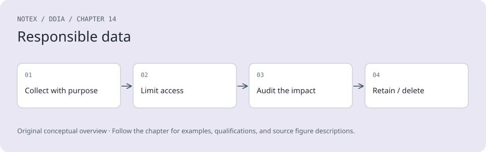

Chapter 14. Doing the Right Thing
Feeding AI systems on the world’s beauty, ugliness, and cruelty, but expecting it to reflect only the beauty is a fantasy.
Vinay Uday Prabhu and Abeba Birhane, “Large Datasets: A Pyrrhic Win for Computer Vision?” (2020)
In the final chapter of this book, let’s take a step back. Throughout the book we have examined a wide range of architectures for data systems, evaluated their pros and cons, and explored techniques for building reliable, scalable, and maintainable applications. However, we have left out a fundamental part of the discussion, which we should now fill in.
Every system is built for a purpose; every action we take has both intended and unintended consequences. The purpose may be as simple as making money, but the consequences may be far-reaching. We, the engineers building these systems, have a responsibility to carefully consider those consequences and to ensure that our decisions do not cause harm.
We talk about data as an abstract thing, but remember that many datasets are about people: their behavior, their interests, their identity. We must treat such data with humanity and respect. Users are humans too, and human dignity is paramount [1].
Software development increasingly involves making important ethical choices. There are guidelines to help software engineers navigate these issues, such as the ACM Code of Ethics and Professional Conduct [2], but they are rarely discussed, applied, and enforced in practice. As a result, engineers and product managers sometimes take a cavalier attitude to privacy and potential negative consequences of their products [3, 4].
A technology is not good or bad in itself—what matters is how it is used and how it affects people. This is true of a software system like a search engine in much the same way as it is of a weapon like a gun. The ethical responsibility is ours to bear; it is not sufficient for software engineers to focus exclusively on the technology and ignore its consequences.
In contrast to much of computing, however, the concepts at the heart of ethics are not fixed or determinate in their precise meaning; they require interpretation, which may be subjective [5]. What makes something “good” or “bad” is not well defined, and serious discourse on the subject among computing professionals is lacking [6]. Reasoning about ethics is difficult, but it is too important to ignore. What does this entail? Ethics is not going through a checklist to confirm you comply; it’s a participatory and iterative process of reflection, in dialog with the people involved, with accountability for the results [7].
Predictive Analytics
Predictive analytics is a major part of why people are excited about big data and AI. It’s also an area that is fraught with ethical dilemmas. Using data analysis to predict the weather, or the spread of diseases, is one thing [8]; it is another matter to predict whether a convict is likely to reoffend, whether an applicant for a loan is likely to default, or whether an insurance customer is likely to make expensive claims [9]. The latter have a direct effect on individual people’s lives.
Naturally, payment networks want to prevent fraudulent transactions, banks want to avoid bad loans, airlines want to avoid hijackings, and companies want to avoid hiring ineffective or untrustworthy people. From their point of view, the cost of a missed business opportunity is low, but the cost of a bad loan or a problematic employee is much higher, so it is expected for organizations to want to be cautious. If in doubt, they are better off saying no.
However, as algorithmic decision making becomes more widespread, someone who has (accurately or falsely) been labeled as risky by an algorithm may suffer a large number of those “no” decisions. Systematically being excluded from jobs, air travel, insurance coverage, property rental, financial services, and other key aspects of society is such a large constraint of an individual’s freedom that it has been called “algorithmic prison” [10]. In countries that respect human rights, the criminal justice system presumes innocence until proven guilty; on the other hand, automated systems can systematically and arbitrarily exclude a person from participating in society without any proof of guilt, and with little chance of appeal.
Bias and Discrimination
Decisions made by an algorithm are not necessarily any better or any worse than those made by a human. Every person is likely to have biases, even if they actively try to counteract them, and discriminatory practices can become culturally institutionalized. There is hope that basing decisions on data, rather than subjective and instinctive assessments by people, could be more fair and give a better chance to people who are often overlooked or disadvantaged in the traditional system [11].
When we develop predictive analytics and AI systems, we are not merely automating a human’s decision by using software to specify the rules for when to say yes or no; we are leaving the rules themselves to be inferred from data. However, the patterns learned by these systems are opaque: even if the data indicates a correlation, we may not know why. If the input to an algorithm carries a systematic bias, the system will most likely learn and amplify that bias in its output [12].
In many countries, anti-discrimination laws prohibit treating people differently depending on protected traits such as ethnicity, age, gender, sexuality, disability, or beliefs. Other features of a person’s data may be analyzed, but what happens if they are correlated with protected traits? For example, in racially segregated neighborhoods, a person’s postal code or even their IP address is a strong predictor of race. Put like this, it seems ridiculous to believe that an algorithm could somehow take biased data as input and produce fair and impartial output from it [13, 14]. Yet this belief often seems to be implied by proponents of data-driven decision making—an attitude that has been satirized as “machine learning is like money laundering for bias” [15].
Predictive analytics systems merely extrapolate from the past; if the past is discriminatory, they codify and amplify that discrimination [16]. If we want the future to be better than the past, moral imagination is required, and that’s something only humans can provide [17]. Data and models should be our tools, not our masters.
Responsibility and Accountability
Automated decision making opens the question of responsibility and accountability [17]. If a human makes a mistake, they can be held accountable, and the person affected by the decision can appeal. Algorithms make mistakes too, but who is accountable if they go wrong [18]? When a self-driving car causes an accident, who is responsible? If an automated credit scoring algorithm systematically discriminates against people of a particular race or religion, is there any recourse? If a decision by your ML system comes under judicial review, can you explain to the judge how the algorithm made its decision? People should not be able to evade their responsibility by blaming an algorithm.
Credit rating agencies are a classic example of collecting data to make decisions about people. A bad credit score makes life difficult, but at least a credit score is normally based on relevant facts about a person’s actual borrowing history, and any errors in the record can be corrected (although the agencies normally do not make this easy). Scoring algorithms based on machine learning, however, typically use a much wider range of inputs and are much more opaque, making it harder to understand how a particular decision has come about and whether someone is being treated in an unfair or discriminatory way [19].
A credit score summarizes “How did you behave in the past?,” whereas predictive analytics usually work on the basis of “Who is similar to you, and how did people like you behave in the past?” Drawing parallels to others’ behavior implies stereotyping people—for example, based on where they live (a close proxy for race and socioeconomic class). What about people who get put in the wrong bucket? Furthermore, if a decision is incorrect because of erroneous data, recourse is almost impossible [17].
Much data is statistical in nature, which means that even if the probability distribution on the whole is correct, individual cases may well be wrong. For example, if the average life expectancy in your country is 80 years, that doesn’t mean you’re expected to drop dead on your 80th birthday. From the average and the probability distribution, you can’t say much about the age to which one particular person will live. Similarly, the output of a prediction system is probabilistic and may well be wrong in individual cases.
A blind belief in the supremacy of data for making decisions is not only delusional but also positively dangerous. As data-driven decision making becomes more widespread, we will need to figure out how to avoid reinforcing existing biases, how to make algorithms accountable and transparent, and how to fix them when they inevitably make mistakes.
We will also need to figure out how to realize the positive potential of data and prevent it from being used to harm people. For example, analytics can reveal financial and social characteristics of people’s lives. On the one hand, this power could be used to focus aid and support to help those who need it most. On the other hand, it is sometimes used by predatory businesses seeking to identify vulnerable people and sell them risky products such as high-cost loans or worthless college degrees [17, 20].
Feedback Loops
Even with predictive applications that have less immediately far-reaching effects on people, such as recommendation systems, there are difficult issues that we must confront. When services become good at predicting the content users want to see, they may end up showing people only opinions they already agree with, leading to echo chambers in which stereotypes, misinformation, and polarization can breed. We are already seeing the impact social media echo chambers can have on election campaigns.
When predictive analytics affect people’s lives, particularly pernicious problems arise because of self-reinforcing feedback loops. For example, consider the case of employers using credit scores to evaluate potential hires. You may be a good worker with a good credit score, but suddenly find yourself in financial difficulties due to a misfortune outside of your control. As you miss payments on your bills, your credit score suffers, and you will be less likely to find work. Joblessness pushes you toward poverty, which further worsens your score, making it even harder to find employment [17]. It’s a downward spiral due to poisonous assumptions, hidden behind a camouflage of mathematical rigor and data.
As another example of a feedback loop, economists found that when gas stations in Germany introduced algorithmic prices, competition was reduced and prices for consumers went up because the algorithms learned to collude [21].
We can’t always predict when such feedback loops may happen. However, many consequences can be predicted by thinking about the entire system (not just the computerized parts, but also the people interacting with it)—an approach known as systems thinking [22]. We can try to understand how a data analysis system responds to different behaviors, structures, or characteristics. Does the system reinforce and amplify existing differences between people (e.g., making the rich richer or the poor poorer), or does it try to combat injustice? Even with the best intentions, we must beware of the possibility of unintended consequences.
Privacy and Tracking
Besides the problems of predictive analytics—that is, using data to make automated decisions about people—there are ethical problems with data collection itself. What is the relationship between the organizations collecting data and the people whose data is being collected?
When a system stores only data that a user has explicitly entered, because they want the system to store and process it in a certain way, the system is performing a service for the user; the user is the customer. But when a user’s activity is tracked and logged as a side effect of other things they are doing, the relationship is less clear. The service no longer just does what the user tells it to do; it takes on interests of its own, which may conflict with the user’s interests.
Tracking behavioral data has become increasingly important for user-facing features of many online services. Tracking which search results are clicked helps improve the ranking of search results; providing recommendations (“people who liked X also liked Y”) helps users discover interesting and useful things; A/B tests and user flow analysis can help indicate how a UI might be improved. Those features require some amount of tracking of user behavior, and users benefit from them.
However, depending on a company’s business model, tracking often doesn’t stop there. If the service is funded through advertising, the advertisers are the actual customers, and the users’ interests take second place. Tracking data becomes more detailed, analyses become further-reaching, and data is retained for a long time in order to build up detailed profiles of each person for marketing purposes.
Now the relationship between the company and the user whose data is being collected starts looking quite different. The user is given a free service and is coaxed into engaging with it as much as possible. The tracking of the user primarily serves not that individual but rather the needs of the advertisers who are funding the service. This relationship can be appropriately described with a word that has more sinister connotations: surveillance.
Surveillance
As a thought experiment, try replacing the word data with surveillance, and observe whether common phrases still sound so good [23]. How about this: “In our surveillance-driven organization we collect real-time surveillance streams and store them in our surveillance warehouse. Our surveillance scientists use advanced analytics and surveillance processing in order to derive new insights.”
This thought experiment is unusually polemic for this book, Designing Surveillance-Intensive Applications, but strong words are needed to emphasize this point. In our attempts to make software “eat the world” [24], we have built the greatest mass surveillance infrastructure ever seen. We are rapidly approaching a world in which every inhabited space contains at least one internet-connected microphone, in the form of smartphones, smart TVs, voice-controlled assistant devices, baby monitors, and even children’s toys that use cloud-based speech recognition. Many of these devices have a terrible security record [25].
What is new compared to the past is that digitization has made it easy to collect large amounts of data about people. Surveillance of our location and movements, our social relationships and communications, our purchases and payments, and our health data has become almost unavoidable. A surveillance organization may end up knowing more about a person than that person knows about themselves—for example, identifying illnesses or economic problems before that individual is aware of them.
Even the most totalitarian and repressive regimes of the past could only dream of putting a microphone in every room and forcing every person to constantly carry a device capable of tracking their location and movements. Yet the benefits that we get from digital technology are so great that we now voluntarily accept this state of total surveillance. The difference is just that the data is being collected by corporations to provide us with services, rather than government agencies seeking control [26].
Not all data collection necessarily qualifies as surveillance, but examining it as such can help us understand our relationship with the data collector. Why are we seemingly happy to accept surveillance by corporations? Perhaps you feel you have nothing to hide—in other words, you are totally in line with existing power structures, you are not a marginalized minority, and you needn’t fear persecution [27]. Not everyone is so fortunate. Or perhaps it’s because the purpose seems benign—it’s not overt coercion and conformance, merely better recommendations and more personalized marketing. However, combined with the discussion of predictive analytics from the last section, that distinction seems less clear.
We are already seeing behavioral data on car driving, tracked by cars without drivers’ consent, affecting their insurance premiums [28], and health insurance coverage that depends on people wearing a fitness tracking device. When surveillance is used to make decisions that hold sway over important aspects of life, such as insurance coverage or employment, it starts to appear less benign. Data analysis can also reveal surprisingly intrusive things—for example, the movement sensor in a smartwatch or fitness tracker can be used to work out what you are typing (e.g., passwords) with fairly good accuracy [29]. Sensor accuracy and algorithms for analysis are only going to get better.
Consent and Freedom of Choice
We might assert that users voluntarily choose to use services that track their activity, agreeing to the terms of service and privacy policy and consenting to data collection. We might even claim that users are receiving a valuable service in return for the data they provide, and that the tracking is necessary in order to provide the service. Undoubtedly, social networks, search engines, and various other free online services are valuable to users—but this argument has problems.
First, we should ask why the tracking is necessary. Some forms of tracking directly feed into improving features for users—for example, tracking the click-through rate on search results can help improve a search engine’s result ranking and relevance, and tracking which products customers tend to buy together can help an online shop suggest related products. However, when tracking user interaction for content recommendations, or to build user profiles for advertising purposes, it is less clear whether this is genuinely in the user’s interest. Is it necessary only because the ads pay for the service?
Second, most users have little knowledge of what data they are feeding into our databases or how it is retained and processed—and most privacy policies do more to obscure than to illuminate. Without understanding what happens to their data, users cannot give meaningful consent. Often, data from one user also says things about other people who are not users of the service and who have not agreed to any terms. The derived datasets that we discussed in the last few chapters—in which data from the entire user base may have been combined with behavioral tracking and external data sources—are precisely the kinds of data that users cannot meaningfully understand.
Moreover, data is extracted from users through a one-way process, not a relationship with true reciprocity or a fair value exchange. There is no dialogue, no option for users to negotiate how much data they provide and what service they receive in return. The relationship between the service and the user is asymmetric and one-sided; the terms are set by the service, not by the user [30, 31].
In the European Union, the General Data Protection Regulation (GDPR) requires that consent must be “freely given, specific, informed, and unambiguous” and that the user must be able to “refuse or withdraw consent without detriment”—otherwise, it is not considered “freely given.” Any request for consent must be written “in an intelligible and easily accessible form, using clear and plain language,” and “silence, pre-ticked boxes or inactivity [do not] constitute consent” [32].
Consent is not the only basis for lawful processing of personal data under the GDPR. There are also several other bases, including to comply with other legislation or to protect somebody’s life. In addition, the legitimate interest basis permits certain uses of data (e.g., for fraud prevention) [33] (which fraudsters would presumably not consent to). Nevertheless, consent is the most frequently used basis for personal data processing in internet services.
You might argue that a user who does not consent to surveillance can simply choose not to use a service. But this choice is not free either. If a service is so popular that it is “regarded by most people as essential for basic social participation” [30], then it is not reasonable to expect people to opt out of using it—its use is effectively mandatory. For example, in most Western social communities, it has become the norm to carry a smartphone, to use social networks for socializing, and to use Google for finding information. Especially when a service has network effects, there is a social cost to people choosing not to use it.
Declining to use a service because of its user tracking policies is easier said than done. These platforms are designed specifically to engage users. Many use game mechanics and tactics common in gambling to keep users coming back [34]. Even if a user gets past this, declining to engage is an option for only the small number of people who are privileged enough to have the time and knowledge to understand its privacy policy, and who can afford to potentially miss out on social participation or professional opportunities that may have arisen if they had participated in the service. For people in a less privileged position, there is no meaningful freedom of choice; surveillance becomes inescapable.
Privacy and Use of Data
Sometimes people claim that “privacy is dead” on the grounds that some users are willing to post all sorts of things about their lives to social media, sometimes mundane and sometimes deeply personal. However, this claim is false and rests on a misunderstanding of the word privacy.
Having privacy does not mean keeping everything secret; it means having the freedom to choose what to reveal to whom, what to make public, and what to keep secret. The right to privacy is a decision right: it enables each person to decide where they want to be on the spectrum between secrecy and transparency in each situation [30]. It is an important aspect of a person’s freedom and autonomy.
For example, someone who suffers from a rare medical condition might be very happy to provide their private medical data to researchers if it might help the development of treatments for their condition. However, this person must have a choice over who may access this data and for what purpose. If information about their condition could hinder their access to medical insurance or employment, for example, this person would probably be much more cautious about sharing their data.
When data is extracted from people through surveillance infrastructure, privacy rights are not necessarily eroded but rather transferred to the data collector. Companies that acquire data essentially say, “Trust us to do the right thing with your data,” which means that the right to decide what to reveal and what to keep secret is transferred from the individual to the company.
The companies in turn choose to keep much of the outcome of this surveillance secret, because to reveal it would be perceived as creepy and would harm their business model (which relies on knowing more about people than other companies do). Intimate information about users is revealed only indirectly—for example, in the form of tools for targeting advertisements to specific groups of people (such as those suffering from a particular illness).
Even if particular users cannot be personally reidentified from the bucket of people targeted by a particular ad, they have lost their agency about the disclosure of some intimate information. It is not the user who decides what is revealed to whom on the basis of their personal preferences—it is the company that exercises the privacy right with the goal of maximizing its profit.
Many companies want to avoid being perceived as creepy, avoiding the question of how intrusive their data collection actually is and instead focusing on managing user perceptions. And even these perceptions are often managed poorly—for example, something may be factually correct, but if it triggers painful memories, the user may not want to be reminded about it [35]. With any kind of data, we should expect the possibility that it is wrong, undesirable, or inappropriate in some way, and we need to build mechanisms for handling those failures. Whether something is “undesirable” or “inappropriate” is of course down to human judgment; algorithms are oblivious to such notions unless we explicitly program them to respect human needs. As engineers of these systems, we must be humble, accepting and planning for such failings.
Privacy settings that allow a user of an online service to control which aspects of their data other users can see are a starting point for handing back some control to users. However, regardless of the setting, the service itself still has unfettered access to the data and is free to use it in any way permitted by the privacy policy. Even if the service promises not to sell the data to third parties, it usually grants itself unrestricted rights to process and analyze the data internally, often going much further than what is overtly visible to users.
This kind of large-scale transfer of privacy rights from individuals to corporations is historically unprecedented [30]. Surveillance has always existed, but it used to be expensive and manual, not scalable and automated. Trust relationships have always existed—for example, between a patient and their doctor, or between a defendant and their attorney—but in these cases the use of data has been strictly governed by ethical, legal, and regulatory constraints. Internet services have made it much easier to amass huge amounts of sensitive information without meaningful consent, and to use it at massive scale without users understanding what is happening to their private data.
Data as Assets and Power
Since behavioral data is a byproduct of users interacting with a service, it is sometimes called “data exhaust”—suggesting that the data is worthless waste material. Viewed this way, behavioral and predictive analytics can be seen as a form of recycling that extracts value from data that would have otherwise been thrown away.
More correct would be to view it the other way around. From an economic point of view, if targeted advertising is what pays for a service, then the user activity that generates behavioral data could be regarded as a form of labor [36]. One could go even further and argue that the application with which the user interacts is merely a means to lure users into feeding more and more personal information into the surveillance infrastructure [30]. The delightful human creativity and social relationships that often find expression in online services are cynically exploited by the data extraction machine.
Personal data is a valuable asset, as evidenced by the existence of data brokers operating in secrecy, purchasing, aggregating, analyzing, and reselling people’s personal data, mostly for marketing purposes [20]. Startups are valued by their user numbers, or “eyeballs”—that is, by their surveillance capabilities.
Because the data is valuable, many people want it. Of course, companies want it—that’s why they collect it in the first place. But governments want it too, and they may seek to obtain it by means of secret deals, coercion, legal compulsion, or simply theft [37]. When a company goes bankrupt, the personal data it has collected is one of the assets that get sold. And because data is difficult to secure, breaches happen disconcertingly often.
These observations have led critics to say that data is not just an asset, but a “toxic asset” [37], or at least “hazardous material” [38]. Maybe data is not the new gold, or the new oil, but rather the new uranium [39]. Even if we think that we are capable of preventing abuse of data, whenever we collect it, we need to balance the benefits with the risk of it falling into the wrong hands. Computer systems may be compromised by criminals or hostile foreign intelligence services, data may be leaked by insiders, the company may fall into the hands of unscrupulous management that does not share our values, or the country may be taken over by a regime that has no qualms about compelling us to hand over the data.
As that observation suggests, when collecting data, we need to consider not just today’s political environment, but all possible future governments. There is no guarantee that every government elected in the future will respect human rights and civil liberties, and as Bruce Schneier observes, “It is poor civic hygiene to install technologies that could someday facilitate a police state” [40].
“Knowledge is power,” as the old adage goes. And furthermore, “To scrutinize others while avoiding scrutiny oneself is one of the most important forms of power” [41]. This is why totalitarian governments want surveillance: it gives them the power to control the population. Although today’s technology companies are not overtly seeking political power, the data and knowledge they have accumulated—much of it surreptitiously, outside of public oversight—nevertheless gives them a lot of power over our lives [42].
Remembering the Industrial Revolution
Data is the defining feature of the information age. The internet, data storage and processing, and software-driven automation are having a major impact on the global economy and human society. As our daily lives and social organization have been changed by information technology, and will probably continue to radically change in the coming decades, comparisons to the Industrial Revolution come to mind [17, 26].
The Industrial Revolution came about through major technological and agricultural advances, and it brought sustained economic growth and significantly improved living standards in the long run—yet it also came with major problems. Pollution of the air (due to smoke and chemical processes) and the water (from industrial and human waste) was dreadful. Factory owners lived in splendor, while urban workers often lived in cramped and unsanitary housing and worked long hours in harsh conditions. Child labor was common, including dangerous and poorly paid work in mines.
It took a long time before safeguards were established, such as environmental protection regulations, safety protocols for workplaces, laws prohibiting child labor, and health inspections for food. Undoubtedly, the cost of doing business increased when factories were no longer allowed to dump their waste into rivers, sell tainted foods, or exploit workers. But society as a whole benefited hugely from these regulations, and few of us would want to return to a time before [17].
Just as the Industrial Revolution had a dark side that needed to be managed, our transition to the information age has major problems that we need to confront and solve [43, 44]. The collection and use of data is one of those problems. In the words of Bruce Schneier [26]:
Data is the pollution problem of the information age, and protecting privacy is the environmental challenge. Almost all computers produce information. It stays around, festering. How we deal with it—how we contain it and how we dispose of it—is central to the health of our information economy. Just as we look back today at the early decades of the industrial age and wonder how our ancestors could have ignored pollution in their rush to build an industrial world, our grandchildren will look back at us during these early decades of the information age and judge us on how we addressed the challenge of data collection and misuse.
We should try to make them proud.
Legislation and Self-Regulation
Data protection laws might be able to help preserve individuals’ rights. For example, the GDPR states that personal data must be “collected for specified, explicit and legitimate purposes and not further processed in a manner that is incompatible with those purposes” and be “adequate, relevant and limited to what is necessary in relation to the purposes for which [it is] processed” [32].
However, this principle of data minimization runs directly counter to the philosophy of big data, which is to maximize data collection, to combine the collected data with other datasets, and to experiment and explore in order to generate new insights. Exploration means using data for unforeseen purposes, which the GDPR states is the opposite of the “specified and explicit” purposes for which the data must have been collected. While this regulation has had some effect on the online advertising industry [45], it has been weakly enforced [46] and does not seem to have led to much of a change in culture and practices across the wider tech industry.
Companies that collect lots of data about people broadly oppose regulation as being a burden and a hindrance to innovation. To some extent, that opposition is justified. For example, sharing medical data creates clear risks to privacy but also potential opportunities: how many deaths could be prevented if data analysis were able to help us achieve better diagnostics or find better treatments [47]? Overregulation may prevent such breakthroughs. It is difficult to balance the potential opportunities with the risks [41].
Fundamentally, we need a culture shift in the tech industry with regard to personal data. We should stop regarding users as metrics to be optimized, and remember that they are humans who deserve respect, dignity, and agency. We should self-regulate our data collection and processing practices in order to establish and maintain the trust of the people who depend on our software [48]. And we should take it upon ourselves to educate end users about how their data is used rather than keeping them in the dark.
We should allow each individual to maintain their privacy (i.e., their control over their own data) and not steal that control from them through surveillance. Our individual right to control our data is like the natural environment of a national park: if we don’t explicitly protect and care for it, it will be destroyed. It will be the tragedy of the commons, and we will all be worse off for it. Ubiquitous surveillance is not inevitable. We are still able to stop it.
As a first step, we should not retain data forever, but purge it as soon as it is no longer needed, and minimize what we collect in the first place [48, 49]. Data you don’t have is data that can’t be leaked, stolen, or compelled by governments to be handed over. Overall, culture and attitude changes will be necessary. As people working in technology, if we don’t consider the societal impact of our work, we’re not doing our job [50].
Summary
This brings us to the end of the book. We have covered a lot of ground:
-
In Chapter 1 we contrasted analytical and operational systems, compared the cloud to self-hosting, weighed up distributed and single-node systems, and discussed balancing the needs of your business with the needs of your users.
-
In Chapter 2 we saw how to define several nonfunctional requirements, such as performance, reliability, scalability, and maintainability.
-
In Chapter 3 we explored a spectrum of data models, including the relational, document, and graph models, event sourcing, and DataFrames. We also looked at examples of various query languages, including SQL, Cypher, SPARQL, Datalog, and GraphQL.
-
In Chapter 4 we discussed storage engines for OLTP (LSM-trees and B-trees) and analytics (column-oriented storage), as well as indexes for information retrieval (full-text and vector search).
-
In Chapter 5 we examined different ways of encoding data objects as bytes and how to support evolution as requirements change. We also compared several ways that data flows between processes: via databases, service calls, workflow engines, and event-driven architectures.
-
In Chapter 6 we studied the trade-offs between single-leader, multi-leader, and leaderless replication. We also looked at consistency models such as read-after-write consistency and sync engines that allow clients to work offline.
-
In Chapter 7 we looked at sharding, including strategies for rebalancing, request routing, and secondary indexing.
-
In Chapter 8 we covered transactions, considering durability, how various isolation levels (read committed, snapshot isolation, and serializable) can be achieved, and how atomicity can be ensured in distributed transactions.
-
In Chapter 9 we surveyed fundamental problems that occur in distributed systems (network faults and delays, clock errors, process pauses, crashes) and saw how they make it difficult to correctly implement even something seemingly simple like a lock.
-
In Chapter 10 we went on a deep dive into various forms of consensus and the consistency model (linearizability) it enables.
-
In Chapter 11 we dug into batch processing, building up from simple chains of Unix tools to large-scale distributed batch processors using distributed filesystems or object stores.
-
In Chapter 12 we generalized batch processing to stream processing and discussed the underlying message brokers, CDC, fault tolerance, and processing patterns such as streaming joins.
-
In Chapter 13 we explored a philosophy of streaming systems that allows disparate data systems to be integrated, systems to be evolved, and applications to be scaled more easily.
Finally, in this last chapter, we took a step back and examined some ethical aspects of building data-intensive applications. We saw that although data can be used to do good, it can also do significant harm: making decisions that seriously affect people’s lives and are difficult to appeal against, leading to discrimination and exploitation, normalizing surveillance, and exposing intimate information. We also run the risk of data breaches, and we may find that a well-intentioned use of data has unintended consequences.
Given the large impact that software and data have on the world, we as engineers must remember that we carry a responsibility to work toward the kind of world that we want to live in: a world that treats people with humanity and respect. Let’s work together toward that goal.
Footnotes
References
[1] David Schmudde. “What If Data Is a Bad Idea?” schmud.de, August 2024. Archived at perma.cc/ZXU5-XMCT
[2] Association for Computing Machinery. “ACM Code of Ethics and Professional Conduct.” acm.org, 2018. Archived at perma.cc/SEA8-CMB8
[3] Igor Perisic. “Making Hard Choices: The Quest for Ethics in Machine Learning.” linkedin.com, November 2016. Archived at perma.cc/DGF8-KNT7
[4] John Naughton. “Algorithm Writers Need a Code of Conduct.” theguardian.com, December 2015. Archived at perma.cc/TBG2-3NG6
[5] Deborah G. Johnson and Mario Verdicchio. “Ethical AI Is Not About AI.” Communications of the ACM, volume 66, issue 2, pages 32–34, January 2023. doi:10.1145/3576932
[6] Ben Green. “‘Good’ Isn’t Good Enough.” At NeurIPS Joint Workshop on AI for Social Good, December 2019. Archived at perma.cc/H4LN-7VY3
[7] Marc Steen. “Ethics as a Participatory and Iterative Process.” Communications of the ACM, volume 66, issue 5, pages 27–29, April 2023. doi:10.1145/3550069
[8] Logan Kugler. “What Happens When Big Data Blunders?” Communications of the ACM, volume 59, issue 6, pages 15–16, June 2016. doi:10.1145/2911975
[9] Miri Zilka. “Algorithms and the Criminal Justice System: Promises and Challenges in Deployment and Research.” At University of Cambridge Security Seminar Series, March 2023. Archived at archive.org
[10] Bill Davidow. “Welcome to Algorithmic Prison.” theatlantic.com, February 2014. Archived at archive.org
[11] Don Peck. “They’re Watching You at Work.” theatlantic.com, December 2013. Archived at perma.cc/YR9T-6M38
[12] Leigh Alexander. “Is an Algorithm Any Less Racist Than a Human?” theguardian.com, August 2016. Archived at perma.cc/XP93-DSVX
[13] Jesse Emspak. “How a Machine Learns Prejudice.” scientificamerican.com, December 2016. perma.cc/R3L5-55E6
[14] Rohit Chopra, Kristen Clarke, Charlotte A. Burrows, and Lina M. Khan. “Joint Statement on Enforcement Efforts Against Discrimination and Bias in Automated Systems.” ftc.gov, April 2023. Archived at perma.cc/YY4Y-RCCA
[15] Maciej Cegłowski. “The Moral Economy of Tech.” idlewords.com, June 2016. Archived at perma.cc/L8XV-BKTD
[16] Greg Nichols. “Artificial Intelligence in Healthcare Is Racist.” zdnet.com, November 2020. Archived at perma.cc/3MKW-YKRS
[17] Cathy O’Neil. Weapons of Math Destruction: How Big Data Increases Inequality and Threatens Democracy. Crown Publishing, 2016. ISBN: 9780553418811
[18] Julia Angwin. “Make Algorithms Accountable.” nytimes.com, August 2016. Archived at archive.org
[19] Bryce Goodman and Seth Flaxman. “European Union Regulations on Algorithmic Decision-Making and a ‘Right to Explanation.’” At ICML Workshop on Human Interpretability in Machine Learning, June 2016. Archived at arxiv.org
[20] United States Senate Committee on Commerce, Science, and Transportation, Office of Oversight and Investigations, Majority Staff. “A Review of the Data Broker Industry: Collection, Use, and Sale of Consumer Data for Marketing Purposes.” Staff Report, commerce.senate.gov, December 2013. Archived at perma.cc/32NV-YWLQ
[21] Stephanie Assad, Robert Clark, Daniel Ershov, and Lei Xu. “Algorithmic Pricing and Competition: Empirical Evidence from the German Retail Gasoline Market.” Journal of Political Economy, volume 132, issue 3, pages 723–771, March 2024. doi:10.1086/726906
[22] Donella H. Meadows and Diana Wright. Thinking in Systems: A Primer. Chelsea Green Publishing, 2008. ISBN: 9781603580557
[23] Daniel J. Bernstein. “Listening to a ‘big data’/‘data science’ talk. Mentally translating ‘data’ to '‘surveillance’: ‘…everything starts with surveillance…’” x.com, May 2015. Archived at perma.cc/EY3D-WBBJ
[24] Marc Andreessen. “Why Software Is Eating the World.” a16z.com, August 2011. Archived at perma.cc/3DCC-W3G6
[25] J. M. Porup. “‘Internet of Things’ Security Is Hilariously Broken and Getting Worse.” arstechnica.com, January 2016. Archived at archive.org
[26] Bruce Schneier. Data and Goliath: The Hidden Battles to Collect Your Data and Control Your World. W. W. Norton, 2015. ISBN: 9780393352177
[27] The Grugq. “Nothing to Hide.” grugq.tumblr.com, April 2016. Archived at perma.cc/BL95-8W5M
[28] Federal Trade Commission. “FTC Takes Action Against General Motors for Sharing Drivers’ Precise Location and Driving Behavior Data Without Consent.” ftc.gov, January 2025. Archived at perma.cc/3XGV-3HRD
[29] Tony Beltramelli. “Deep-Spying: Spying Using Smartwatch and Deep Learning.” Masters thesis, IT University of Copenhagen, December 2015. Archived at arxiv.org
[30] Shoshana Zuboff. “Big Other: Surveillance Capitalism and the Prospects of an Information Civilization.” Journal of Information Technology, volume 30, issue 1, pages 75–89, April 2015. doi:10.1057/jit.2015.5
[31] Michiel Rhoen. “Beyond Consent: Improving Data Protection Through Consumer Protection Law.” Internet Policy Review, volume 5, issue 1, March 2016. doi:10.14763/2016.1.404
[32] “Regulation (EU) 2016/679 of the European Parliament and of the Council of 27 April 2016.” Official Journal of the European Union, L 119/1, May 2016.
[33] UK Information Commissioner’s Office. “What Is the ‘Legitimate Interests’ Basis?” ico.org.uk. Archived at perma.cc/W8XR-F7ML
[34] Tristan Harris. “How a Handful of Tech Companies Control Billions of Minds Every Day.” At TED2017, April 2017. Archived at archive.org
[35] Carina C. Zona. “Consequences of an Insightful Algorithm.” At GOTO Berlin, November 2016.
[36] Imanol Arrieta Ibarra, Leonard Goff, Diego Jiménez Hernández, Jaron Lanier, and E. Glen Weyl. “Should We Treat Data as Labor? Moving Beyond ‘Free.’” American Economic Association Papers Proceedings, volume 108, pages 38–42, May 2018. doi:10.1257/pandp.20181003
[37] Bruce Schneier. “Data Is a Toxic Asset, So Why Not Throw It Out?” schneier.com, March 2016. Archived at perma.cc/4GZH-WR3D
[38] Cory Scott. “Data is not toxic—which implies no benefit—but rather hazardous material, where we must balance need vs. want.” x.com, March 2016. Archived at perma.cc/CLV7-JF2E
[39] Mark Pesce. “Data Is The New Uranium—Incredibly Powerful And Amazingly Dangerous.” theregister.com, November 2024. Archived at perma.cc/NV8B-GYGV
[40] Bruce Schneier. “Mission Creep: When Everything Is Terrorism.” schneier.com, July 2013. Archived at perma.cc/QB2C-5RCE
[41] Lena Ulbricht and Maximilian von Grafenstein. “Big Data: Big Power Shifts?” Internet Policy Review, volume 5, issue 1, March 2016. doi:10.14763/2016.1.406
[42] Ellen P. Goodman and Julia Powles. “Facebook and Google: Most Powerful and Secretive Empires We’ve Ever Known.” theguardian.com, September 2016. Archived at perma.cc/8UJA-43G6
[43] Judy Estrin and Sam Gill. “The World Is Choking on Digital Pollution.” washingtonmonthly.com, January 2019. Archived at perma.cc/3VHF-C6UC
[44] A. Michael Froomkin. “Regulating Mass Surveillance as Privacy Pollution: Learning from Environmental Impact Statements.” University of Illinois Law Review, volume 2015, issue 5, August 2015. Archived at perma.cc/24ZL-VK2T
[45] Pengyuan Wang, Li Jiang, and Jian Yang. “The Early Impact of GDPR Compliance on Display Advertising: The Case of an Ad Publisher.” Journal of Marketing Research, volume 61, issue 1, April 2023. doi:10.1177/00222437231171848
[46] Johnny Ryan. “Don’t Be Fooled by Meta’s Fine for Data Breaches.” The Economist, May 2023. Archived at perma.cc/VCR6-55HR
[47] Jessica Leber. “Your Data Footprint Is Affecting Your Life in Ways You Can’t Even Imagine.” fastcompany.com, March 2016. Archived at archive.org
[48] Maciej Cegłowski. “Haunted by Data.” idlewords.com, October 2015. Archived at archive.org
[49] Sam Thielman. “You Are Not What You Read: Librarians Purge User Data to Protect Privacy.” theguardian.com, January 2016. Archived at archive.org
[50] Jez Humble. “It’s a cliché that people get into tech to ‘change the world.’ So then, you have to actually consider what the impact of your work is on the world. The idea that you can or should exclude societal and political discussions in tech is idiotic. It means you’re not doing your job.” x.com, April 2021. Archived at perma.cc/3NYS-MHLC
- table of contents
- search
- settings
- Previous chapter
-
- A Philosophy of Streaming Systems
- Next chapter
- Glossary
- Table of contents collapsed